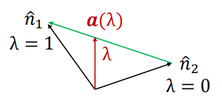
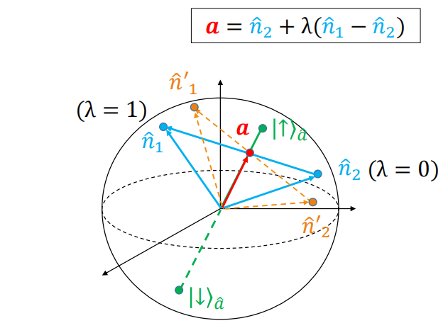

密度矩阵的定义和性质
本征态下的密度矩阵
对于一个处于热平衡态的态矢 ∣E⟩，它的概率为
P(E)T=Ze−βE
其中 Z=∑Ee−βE 是配分函数，起到归一化的作用，使得 ∑EP(E)T=1。
现考虑一个可观测量 Q，它的期望值为
⟨Q⟩T=E∑热概率P(E)T量子概率⟨E∣Q^∣E⟩
上式的意义是在抽中态 ∣E⟩ 的情况下，计算 Q 的期望值。对其进行具体计算，则 ⟨Q⟩ 可写为
⟨Q⟩=E∑Ze−βE⟨E∣Q^∣E⟩=Z1E∑⟨E∣e−βH^Q^∣E⟩=Z1Tr(Q^e−βH^)
再从另一个角度计算 Q 的期望值
⟨Q⟩T=E∑Q′∑P(E)T⟨E∣Q∣Q′⟩⟨Q′∣E⟩=E∑Q′∑P(E)TQ′⟨Q′∣E⟩⟨E∣Q′⟩=Q′∑Q′⟨Q′∣(E∑P(E)T∣E⟩⟨E∣)∣Q′⟩=Q′∑Q′⟨Q′∣ρ^T∣Q′⟩
其中 ρ^T=∑EP(E)T∣E⟩⟨E∣=∑EZe−βE∣E⟩⟨E∣=e−βH^/Z，称为热系综的密度矩阵，也就是权重为玻尔兹曼分布的投影算符的加和。因此我们得到一个十分重要的结论：
⟨Q⟩T=Tr(Q^ρ^T)=Tr(ρ^TQ^)
密度矩阵 ρ^T=∑EP(E)T∣E⟩⟨E∣ 具有以下几个重要性质：
- ρ^T 是厄米算符：ρ^T†=ρ^T。
- 0≤PT(E)≤1 是 ρ^T 的本征值。
- ∑EPT(E)=1⇒Tr(ρ^T)=1。
密度矩阵的一般定义
更一般的定义：若有一套正交完备基 {∣m⟩}，系统处于每个纯态的概率为 Pm，满足 0≤Pm≤1 且 ∑mPm=1，则定义密度矩阵为
ρ=m∑Pm∣m⟩⟨m∣
那么有
- ∣m⟩ 是本征值为 Pm 的本征态，且 0≤Pm≤1，
ρ^∣m⟩=Pm∣m⟩
- Tr(ρ)=1。
- 任意算符的平均值为 ⟨α⟩=∑mPm⟨m∣α^∣m⟩=Tr(ρα^)。
- 在更为一般的情况下，密度矩阵为
ρ=m∑Pm∣m⟩⟨m∣=m∑ξ′ξ′′∑Pm∣ξ′⟩⟨ξ′∣m⟩⟨m∣ξ′′⟩⟨ξ′′∣=ξ′ξ′′∑(m∑Pm⟨ξ′∣m⟩⟨m∣ξ′′⟩)∣ξ′⟩⟨ξ′′∣≡ξ′ξ′′∑ρξ′ξ′′∣ξ′⟩⟨ξ′′∣
其中 ρξ′ξ′′=∑mPm⟨ξ′∣m⟩⟨m∣ξ′′⟩ 是密度矩阵在 {∣ξ⟩} 基下的矩阵元。
ρξ′ξ′′∗=m∑Pm⟨ξ′∣m⟩⟨m∣ξ′′⟩∗=m∑Pm⟨m∣ξ′′⟩⟨ξ′∣m⟩=ρξ′′ξ′⇒ρ 是厄米矩阵
- 若某个态的概率 Pm=δmn，则密度矩阵化简为纯态的投影算符
ρ=m∑δmn∣m⟩⟨m∣=∣n⟩⟨n∣
此时密度矩阵对角元有且仅有一个为 1，其余均为 0。纯态的密度矩阵还满足
ρ2=(∣n⟩⟨n∣)(∣n⟩⟨n∣)=∣n⟩⟨n∣=ρ⇒Tr(ρ2)=Tr(ρ)=1
对于任意态矢 ∣ψ⟩，其对应的密度矩阵为 ρ=∣ψ⟩⟨ψ∣，都满足 ρ2=ρ 和 Tr(ρ2)=1。
- 对于更为一般的态，密度矩阵满足
ρ2=(m∑Pm∣m⟩⟨m∣)(m′∑Pm′∣m′⟩⟨m′∣)=m∑Pm2∣m⟩⟨m∣
因此
Tr(ρ2)=m∑Pm2≤m∑Pm=1
我们称 Tr(ρ2) 为态的纯度。等号仅在纯态时成立，因此可以通过 Tr(ρ2) 来判断系统是否处于纯态：若 Tr(ρ2)<1，则系统处于混合态。
总的来说，一个数学上可接受的密度算符具有以下性质：
- 厄米性：ρ^†=ρ^
- 半正定性：⟨ψ∣ρ^∣ψ⟩≥0 对任意态矢 ∣ψ⟩ 成立
- 单位迹性：Tr(ρ^)=1
注意：经典概率和量子概率是不一样的，例如 ∣ψ⟩=21(∣0⟩+∣1⟩) 和 ρ=21∣0⟩⟨0∣+21∣1⟩⟨1∣ 是不同的。前者是一个纯态，后者是一个混合态。
密度矩阵的凸组合
假设有 n 个密度矩阵 {ρ(i)}，他们都满足
i)ρ(i)=ρ(i)†,ii)Tr(ρ(i))=1,iii)⟨ψ∣ρ(i)∣ψ⟩≥0for all ∣ψ⟩
那么算符 ρ=∑i=1aiρ(i) 也满足上述三个性质，其中 0≤ai≤1 且 ∑i=1ai=1。ρ=∑i=1aiρ(i) 也是一个密度矩阵。
所以我们可以说，所有密度矩阵都形成一个凸集（convex set），这样的一个密度矩阵 ρ 称为 {ρ(i)} 的凸组合（convex combination）。
Lemmay 引理：对于两个密度矩阵 ρ(i) 和 ρ(j)，有 0≤Tr(ρ(i)ρ(j))≤1，其中等号成立当且仅当 ρ(i)=ρ(j)=纯态
定理：一个纯态的密度矩阵不能表示为其他非平庸纯态密度矩阵的凸组合；而混态总可以表示为其他非平庸纯态密度矩阵的凸组合。
- 混态总可以视为纯态的统计混合，这表明纯态比混态更为基本。
- 把混态写成纯态的凸组合并不是唯一的。
冯·诺依曼熵
衡量一个密度矩阵偏离纯态程度的一个重要量是冯·诺依曼熵，定义为
S=−Tr(ρlnρ)
在一般基下，冯诺依曼熵的计算是十分复杂的，但在密度矩阵的本征态基下，计算就非常简单了。设 ρ 的本征值为 {Pm}，则
ρ=m∑Pm∣m⟩⟨m∣⇒lnρ=m∑lnPm∣m⟩⟨m∣⇒S=m∑−PmlnPm
对于一个纯态 S=0，而对于一个混态 S≥0。当所有本征值相等时，即 Pm=1/N，其中 N 是希尔伯特空间的维数，可以证明此时 S 取最大值
Smax=−m=1∑NN1lnN1=lnN
也就是说，冯·诺依曼熵的取值范围为
0≤S≤lnN
当 S=0 时，系统处于纯态；当 S=lnN 时，系统处于最大混合态。
例：一个热系综的密度矩阵为 ρT=∑EZe−βE∣E⟩⟨E∣。当 T→0 时，系统处于基态 ∣E0⟩，此时 ρT=∣E0⟩⟨E0∣，所以 S=0。当 T→∞ 时，e−βE→1，ρT=N1∑E∣E⟩⟨E∣，所有能级等概率占据，S=lnN。所以最大混合态也叫做无限温度态。
密度矩阵的决定
我们之前提到，一个厄米矩阵 ρ 有 N2 个独立实参数（N 是希尔伯特空间的维数）。而密度矩阵还要满足 Tr(ρ)=1，所以密度矩阵有 N2−1 个独立实参数。那么什么样的测量可以决定一个 N2−1 个参数的密度矩阵呢？
在一个任意的基 {∣ξ⟩} 下，密度矩阵有以下形式
ρ=ij∑ρij∣ξi⟩⟨ξj∣=i∑ρii∣ξi⟩⟨ξi∣+i<j∑ρij∣ξi⟩⟨ξj∣+i>j∑ρij∣ξi⟩⟨ξj∣=i∑ρii∣ξi⟩⟨ξi∣+i<j∑ρij∣ξi⟩⟨ξj∣+j>i∑ρji∣ξj⟩⟨ξi∣=i∑ρii∣ξi⟩⟨ξi∣+i<j∑厄米矩阵(ρij∣ξi⟩⟨ξj∣+ρij∗∣ξj⟩⟨ξi∣)
将厄米部分 ρij∣ξi⟩⟨ξj∣+ρij∗∣ξj⟩⟨ξi∣ 写成实部和虚部的形式
ρij∣ξi⟩⟨ξj∣+ρij∗∣ξj⟩⟨ξi∣=2Re(ρij)Xij21(∣ξi⟩⟨ξj∣+∣ξj⟩⟨ξi∣)+i Im(ρij)Yij21(∣ξi⟩⟨ξj∣−∣ξj⟩⟨ξi∣)
其中 Xij 和 Yij 都是厄米的。因此密度矩阵可以写成
ρ=i∑ρiiXii+2i<j∑[Re(ρij)Xij+i Im(ρij)Yij]
式中第一项有 N−1 个实参数，第二项有 N(N−1)/2 个实参数，第三项也有 N(N−1)/2 个实参数，总共 N2−1 个实参数。
那么现在有
Tr(XijXi′j′)=21(δii′δjj′+δij′δji′)
Tr(YijYi′j′)=21(δii′δjj′−δij′δji′)
Tr(XijYi′j′)=0
总的来说，仅有的非零迹为
Tr(XiiXii)=Tr(Xii)=1
Tr(XijXij)=Tr(XijXji)=21(i=j)
Tr(YijYij)=−Tr(YijYji)=21(i=j)
根据上述结果，密度矩阵最后可以写为
ρ=i∑Tr(ρXii)Xii+2i<j∑[Tr(ρXij)Xij+ Tr(ρYij)Yij]=i∑⟨Xii⟩Xii+2i<j∑[⟨Xij⟩Xij+ ⟨Yij⟩Yij]
自旋-1/2 粒子的密度矩阵：Bloch 球
纯态密度矩阵的 Bloch 球表示
现在我们将上节密度矩阵的表示方法应用到自旋-1/2 粒子上。任意方向下的泡利矩阵本征值和本征态为
σ^⋅n^∣↑⟩n=+1∣↑⟩n
σ^⋅n^∣↓⟩n=−1∣↓⟩n
那么可以对 σ⋅n^ 进行谱分解
σ⋅n^=+1∣↑⟩n⟨↑∣n−1∣↓⟩n⟨↓∣n=∣↑⟩n⟨↑∣n−∣↓⟩n⟨↓∣n
结合完备性我们可以得到纯态 ∣↑⟩n 的密度矩阵为
ρ(n^)≡∣↑⟩n⟨↑∣n=21(I+σ⋅n^)
σi 在 ∣↑⟩n 下的期望值为
⟨σi⟩=Tr(ρ(n^)σi)=21Tr[(I+σ⋅n^)σi]=21Tr(σ⋅n^σi)=21Tr(σnniσi)=ni
那么对 σ 的期望值为
⟨σ⟩= n⟨↑∣σ∣↑⟩n=n^
也就是说，一个任意方向的自旋向上态 ∣↑⟩n=(cos2θeiϕsin2θ) 可用一个方向向量 n^=n^(θ,ϕ) 来刻画，对 σ 求期望值得到的就是这个方向向量 n^。
因此，所有自旋-1/2 纯态的密度矩阵都可以由单位球面上的点来表示，这个球面称为 Bloch 球（Bloch sphere）。
ρ(n^)≡∣↑⟩n⟨↑∣n=21(I+σ⋅n^)
ρ(−n^)=∣↑⟩−n⟨↑∣−n=∣↓⟩n⟨↓∣n=21(I−σ⋅n^)
这两个密度矩阵分别对应 Bloch 球上 n^ 和 −n^ 两个对顶点，n^ 和 −n^ 相互正交，且 ρ(n^) 是一个纯态。
混态密度矩阵的 Bloch 球表示
令 ∣ξ1⟩=∣↑⟩，∣ξ2⟩=∣↓⟩，则密度矩阵可写为
ρ=i∑⟨Xii⟩Xii+2i<j∑[⟨Xij⟩Xij+ ⟨Yij⟩Yij]=21(1+⟨σ1⟩σ1+⟨σ2⟩σ2+⟨σ3⟩σ3)=21(I+a⋅σ)
其中 a≡⟨σ⟩=Tr(ρσ) 称为 ρ 的极化矢量。将 a⋅σ 写做 a⋅σ=∣a∣a^⋅σ，显然有
a⋅σ∣↑⟩a=∣a∣∣↑⟩a
a⋅σ∣↓⟩a=−∣a∣∣↓⟩a
因此密度矩阵对自旋态的作用可以写成
ρ∣↑⟩a=21(1+a⋅σ)∣↑⟩a=21(1+∣a∣)∣↑⟩a
ρ∣↓⟩a=21(1+a⋅σ)∣↓⟩a=21(1−∣a∣)∣↓⟩a
那么混态密度矩阵可写为两个正交纯态的凸组合
ρ(a)=21(1+∣a∣)∣↑⟩a⟨↑∣a+21(1−∣a∣)∣↓⟩a⟨↓∣a
由于密度矩阵对角元的经典概率之和要求为 1，所以 0≤∣a∣≤1。当 ∣a∣=1 时，态在 Bloch 球面上，ρ 变为纯态密度矩阵；当 ∣a∣=0 时，态在 Bloch 球原点上，称为非极化态，ρ=21I，对应最大混合态
任意混态都能表示为两个纯态 ρ(±a^)=21(I±σ⋅a^) 的凸组合
ρ(a)=21(1+∣a∣)ρ(a^)+21(1−∣a∣)ρ(−a^)=21(1+∣a∣)21(I+σ⋅a^)+21(1−∣a∣)21(I−σ⋅a^)=21(1+∣a∣)∣↑⟩a⟨↑∣a+21(1−∣a∣)∣↓⟩a⟨↓∣a
密度矩阵态的凸组合
假定任意态 ρ(a) 可表示为两个纯态密度矩阵 ρ(n^1) 和 ρ(n^2) 的凸组合
ρ(a)=λ ρ(n^1)+(1−λ) ρ(n^2)
其中 0≤λ≤1。代入纯态密度矩阵的表达式，有
ρ(a)=λ 21(I+σ⋅n^1)+(1−λ) 21(I+σ⋅n^2)=21+21σ⋅(λn^1+(1−λ)n^2)
比较上式和混态密度矩阵的表达式 ρ(a)=21(I+a⋅σ)，可得
a=λn^1+(1−λ)n^2=n^2+λ(n^1−n^2)

如上图所示，绿色矢量为 λ(n^1−n^2)，红色矢量就是 a 的取值范围。那么给定一个任意态 ρ(a)，可以有无数种方式来画出经过 a 的终点的直线，如下图所示

直线与球面的两个交点为两个单位矢量 n1 和 n2 的终点。根据等式
n^⟨↑∣∣↑⟩m^=21+n^⋅m^
ρ(n^1) 和 ρ(n^2) 只有在 n^1=−n^2 时才正交，此时 n^1=±a^（密度矩阵只有在正交态下才能写为对角形式）。
我们已经证明了任意混态都可以写为两个纯态的凸组合
ρ(a)=21(1+∣a∣)21(1+σ⋅a^)+21(1−∣a∣)21(1−σ⋅a^)
和冯·诺依曼熵在对角表象下的表达式
S=−Tr(ρlnρ)=m∑−PmlnPm
那么得到混态的冯·诺依曼熵
S=−[21+∣a∣ln21+∣a∣+21−∣a∣ln21−∣a∣]
为了在 0≤∣a∣≤1 内找到冯·诺依曼熵的最大值，求一阶导
∂∣a∣∂S=−21[ln21+∣a∣−ln21−∣a∣]=21ln(1+∣a∣1−∣a∣)
令 d∣a∣dS=0，可得 ∣a∣=0，即在 Bloch 球原点处冯·诺依曼熵取得最大值，对应最大混合态，ρ(0)=21。这与我们之前给出的结论相一致。
复合系统和约化密度矩阵